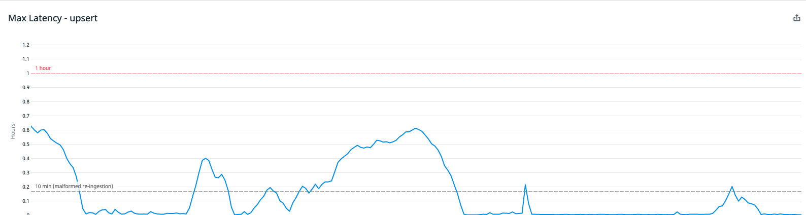
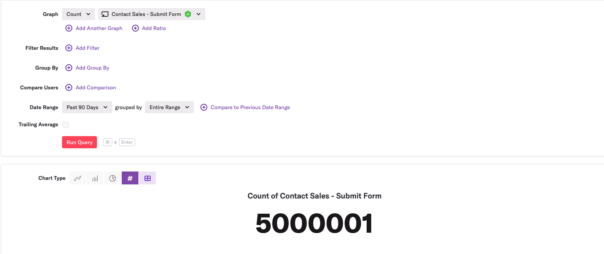
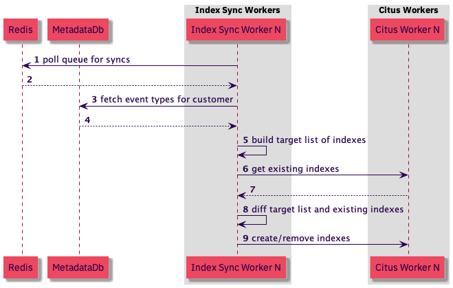

Note: This post was originally published on heap’s blog
Heap is a product analytics tool that automatically captures web and mobile behavior like page views, clicks, and taps. We’re operating at a scale of billions of events per day, which we store across a distributed Postgres cluster. Our cluster has over a million tables of events.
Recently, we discovered an index that makes our new Effort Analysis feature faster, and we attempted to roll out that index across the cluster. This post is about an incident we caused while creating over one million indexes — one for each shard — and the resulting lessons we learned about building large, distributed systems at fast-growing startups.
The Incident
We want our users to be able to answer questions about how their product is being used in real-time; they shouldn’t have to wait hours for their event data to show up in Heap analyses. Unfortunately, when we attempted to roll out our indexes, we caused a delay between when events happen and when they’re actually visible in Heap.
We call this delay “ingestion latency,” and we strive to keep it on the order of a minute or two:

It’s no surprise that rolling out many indexes could cause ingestion latency. While an index is being created, no new data can be inserted into the table.[1] To avoid causing ingestion latency while creating indexes, we never attempt to create them all at once. Instead, we add all customers to a redis queue and only create indexes for a few customers at a time.
We also have separate redis queues for creating new indexes vs. ordinary index maintenance. Finally, we abandon attempts to write any events that cannot be inserted within a reasonable amount of time and replay those same events back later if needed. Surprisingly, this wasn’t enough to prevent ingestion latency in our case.
Indexes at Heap
In order to understand why our typical preventative measures weren’t enough, you’ll need to understand a little about how indexes work at Heap. There are 10s of millions of indexes across our cluster, and they fall into two types: event indexes and core indexes.
Event indexes are created for every event type a user is interested in querying. For example, suppose a user wants to know how many times a submit button is clicked on the “contact us” page over the course of a week. To answer that question, a user would create a new “Submit Contact Form” event type[2] and then select that event type in a Graph analysis:

The reason the SQL query underlying this visualization is fast is that as soon as the user defines a new event type, we queue up a new event index to be created on the shards that are relevant to this one customer.
In contrast, core indexes exist for every shard in the cluster, and they’re needed regardless of which events users are interested in analyzing. For example, Effort Analysis, a way for Heap customers to see the median number of interactions and seconds engaged between each step within a funnel, is powered by a specific core index.
Both of these index types are added via index sync workers, which are node processes that poll a redis queue of customers for whom they should synchronize indexes. The sync workers build a target list of indexes that are supposed to exist on a shard, compare that list with the list of indexes that do exist on a shard, and add or remove any indexes as necessary to make the actual list of indexes match the target list.

This implementation is “idempotent”, meaning that we can enqueue multiple syncs for the same customer and the latter ones will be no-ops. This gives us a few advantages:
- Both the adding or removing indexes as a response to creation and deletion of event types and the adding of indexes for maintenance operations can use the same sync workers.
- Any failed index syncing can easily be rescheduled without regard to the particular index sync failure.
Unfortunately, there’s a disadvantage of this implementation: indexes can be created at a more aggressive pace if many customers happen to be creating event types. Creating an event type triggers the creation of an event type index and any other missing indexes, including core indexes. Those core indexes also tend to be much more expensive to create.
This was the root cause of our ingestion latency. Although we carefully set up one sync worker to process just a few customers at a time, other workers were processing other customers when they created a new event type, and when that happened, we wound up adding the new core index for those customers as well.
These additional ambient syncs hadn’t been an issue in the past, and they didn’t show up as an issue in our small-scale tests of the rollout. However, because of how much Heap has grown recently, the additional ambient syncs put enough stress on the system to cause ingestion latency during the full index rollout. More on this in the next “lessons learned” section.
To prevent something like this from happening again, we now indicate that certain indexes in our target list are “backfill only” indexes, meaning that they should only be synced by index sync workers that are spun up to roll out a new index. These indexes won’t be synced by ordinary workers that are adding indexes in response to event type changes or maintenance operations.
This will prevent this particular issue from occurring in the future, but the more interesting result of the incident are the general lessons about running distributed systems at scale. These are lessons that can prevent other incidents at Heap and beyond.
Lessons Learned
What more could we have done to anticipate that the ambient syncs would cause ingestion latency? We already scheduled the rollout and discussed it with the relevant internal teams. We also conducted small-scale tests to ensure that the rate of the rollout would be reasonable and that ingestion latency metrics were not impacted. What de-risking steps did we miss?
This question is more difficult than it appears. It’s easy to imagine things that would have been possible to do to anticipate this issue, but most of those things wouldn’t have been practical. As a fast-growing startup, we have to strike a balance between shipping features quickly and avoiding temporary spikes to ingestion latency.
There are two practical steps we could have taken to prevent this incident, and both of them have to do with helping us see that ambient syncs were more of a risk than we originally thought.
The first step has to do with using monitoring to assess the riskiness of system changes. Before rolling out the new index, we could have asked ourselves if there was anything we were tracking that could help us assess the risk of ambient syncs. It turns out there was. There is a metric for index sync queue size, and if we looked at it, we would have seen that this metric has high variance:

If we had been monitoring this graph, we’d know that although we have a separate redis queue for rolling out new indexes, if we happened to deploy the code for a new index during one of these spikes, we’d be rolling out the new index much faster than we originally planned. More importantly, we’d know that the results of our small-scale tests were only reliable if they were performed during one of these spikes.
Even if we noticed that our rollout could have been more aggressive than we planned, we still may not have anticipated the incident. Again, we’d deployed core indexes previously without an issue. To anticipate that we’d have an issue this time, we needed to ask another question:
When was the last time we deployed a new core index and what has changed since then?
In our case, we hadn’t deployed a new core index in years, and because of Heap’s aggressive growth over the last 18 months, quite a bit had changed about the load on our systems. The biggest relevant change is that many of the machines storing our data had filled up more than 80% of their available disk space, and as a result, our ingestion latency had a higher baseline and sat more closely at alertable levels.
Generalizing, the lessons to be learned here are:
- Small-scale tests of large changes are useful, but don’t forget to consider whether monitoring and metrics can provide hints about whether the results of the test will be widely applicable.
- When you’re about to make a large change to your system at a rapidly growing company, ask yourself if anything important has changed about the system’s load since the last time someone successfully made a similar change.
If you have any stories of interesting incidents and the lessons you learned from them you want to share, I’d love to hear them! Drop me a line at @philosohacker. And if you find this kind of work interesting, we’re hiring! Check out our team and open roles.
I’d like to thank John Krauss for his essential feedback on earlier drafts of this post.
[1]: Yes, we know about CREATE INDEX CONCURRENTLY. It doesn’t work well for us. See the “Downsides of partial indexes” section of this blog post to find out why.
[2]: Heap users create event types by “defining” a new event type instead of adding additional tracking code to their product. See “How Autocapture Actually Works” for more.